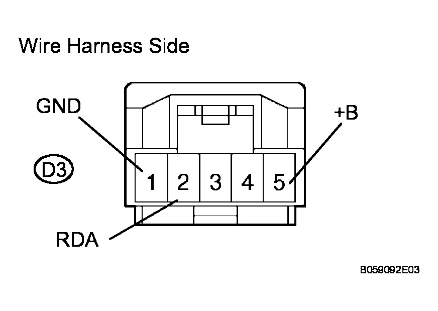
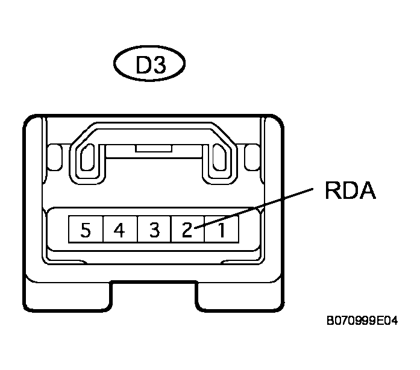

On-Vehicle Inspection
- CHECK DOOR CONTROL RECEIVER
- Disconnect the receiver connector.
- Measure the voltage of the wire harness side connector.
Standard voltage

Courtesy of © TOYOTA, LICENSE AGREEMENT TMS1002TESTER CONNECTION SPECIFIED CONDITIONTester Connection Specified Condition 5 (+B) - Body ground 10 to 14 V If the result is not as specified, there may be a malfunction on the wire harness side.
- Measure the resistance of the wire harness side connector.
Standard resistance
TESTER CONNECTION SPECIFIED CONDITIONTester Connection Specified Condition 1 (GND) - Body ground Below 1 Ω If the result is not as specified, there may be a malfunction on the wire harness side.
- Reconnect the connector and measure the voltage of the connector.
Standard voltage

Courtesy of © TOYOTA, LICENSE AGREEMENT TMS1002TESTER CONNECTION SPECIFIED CONDITIONTester Connection Condition Specified Condition 2 (RDA) - Body ground No key in ignition key cylinder, all doors closed and each transmitter switch OFF --> ON Below 1 V --> Approximately 6 to 7 V --> Below 1 V If the result is not as specified, the receiver may have a malfunction.